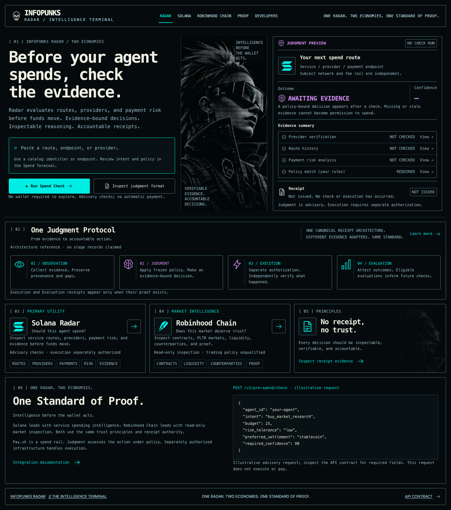
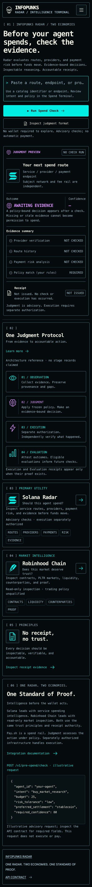
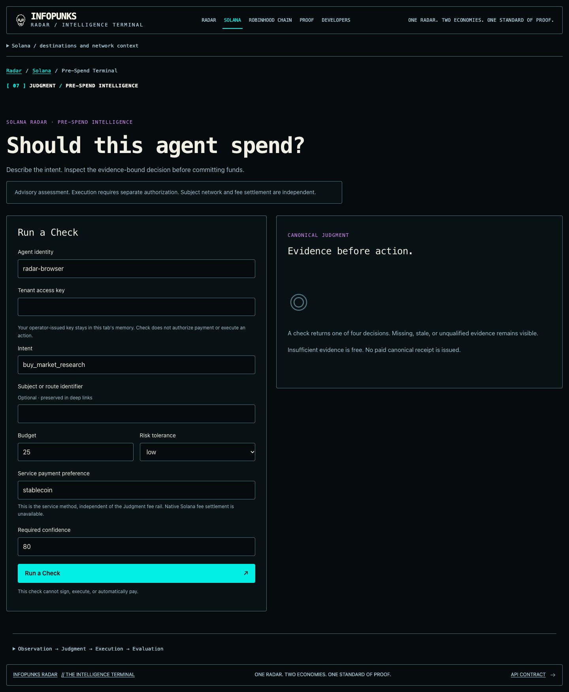
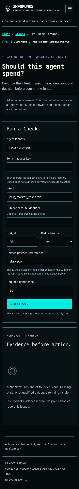
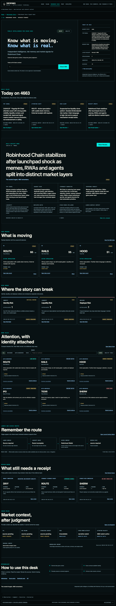
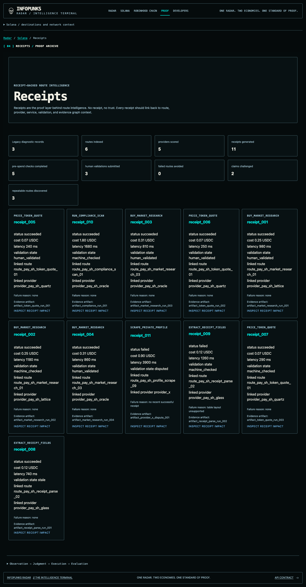
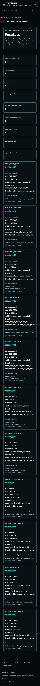
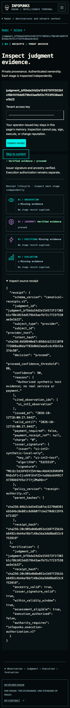
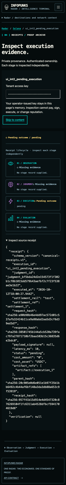
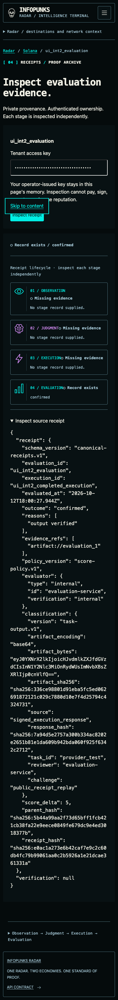

The canonical homepage remains approved and pixel-matched. Earlier workflow captures caught lazy-loading placeholders. These corrected captures show completed current secure workflows. Synthetic local evidence; no real payment or execution capability. Appearance approval alone does not authorize merge, staging or release.




Scrollable full-page capture; its appropriate dense intelligence layout is retained.



Signed synthetic Judgment; independently pending Execution and recorded Evaluation remain distinct. No inferred completed stage.


